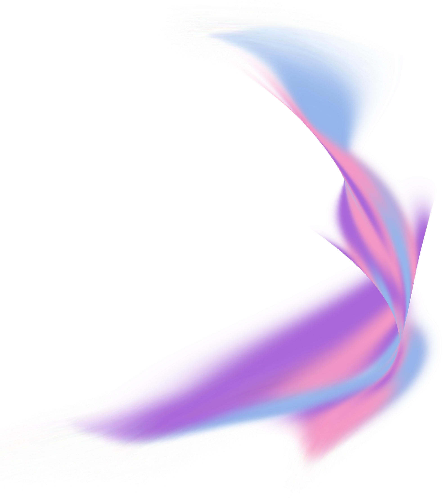

Projets
J’ai réalisé de nombreux projets qui allient web et communication. L’enjeu est de donner à chaque projet sa propre identité pour mettre le sujet en avant et permettre à l’utilisateur une bonne immersion dans l’univers du projet. Pour arriver à ce but, il est nécessaire de déterminer la cible et d’analyser des projets du même type qui existent déjà, pour réussir à faire la différence.
Dossiers de vacataires
Cette application permet aux vacataires et aux administrateurs de l’Université de Franche-Comté de gérer leurs dossiers d’inscription.
Adele
Ce site Internet retrace la vie de la chanteuse Adele, de ses débuts dans la musique jusqu’à sa renommée internationale.
Baguettes en attente
L’action de solidarité Baguettes en attente est désormais présente en ligne grâce à son site Internet.
Shawn Mendes
Plongez dans la vie du chanteur canadien Shawn Mendes, qui s’est fait connaitre dès ses 14 ans et est maintenant connu mondialement.
Bug Days
Découvrez l’énévement esport Bug Days, basé à Belfort, à travers son nouveau site Internet ainsi que son identité visuelle.
ArtSpotting
Voyagez à travers les pays du monde en découvrant des oeuvres d’art, qu’elles soient connues ou non.